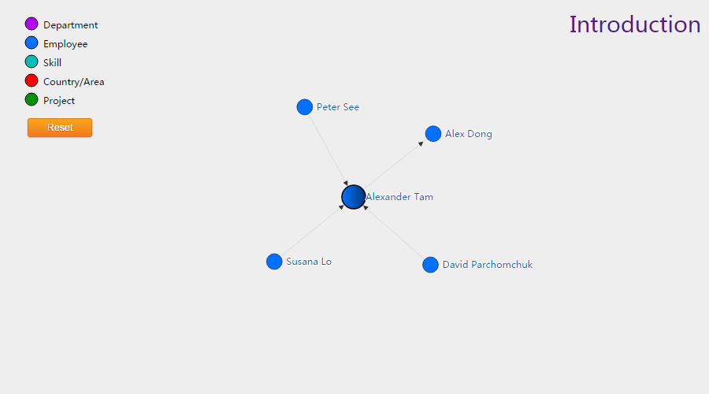
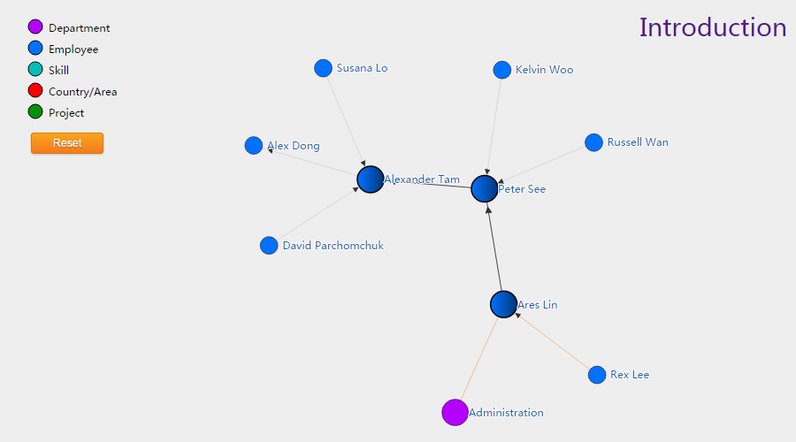
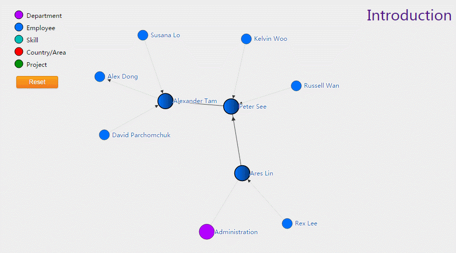
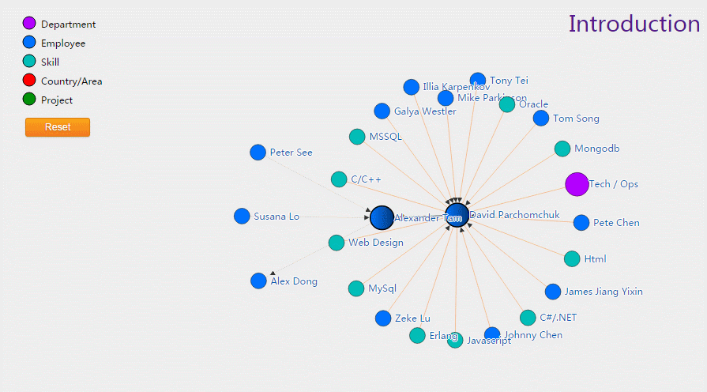
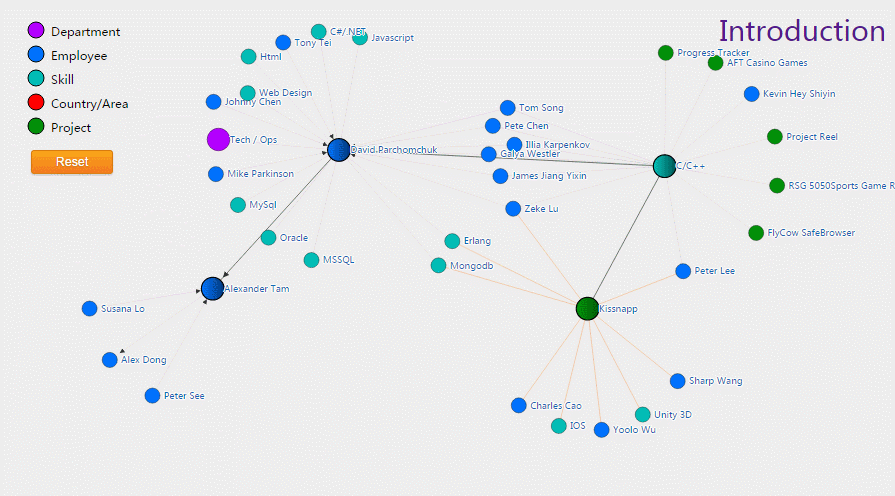
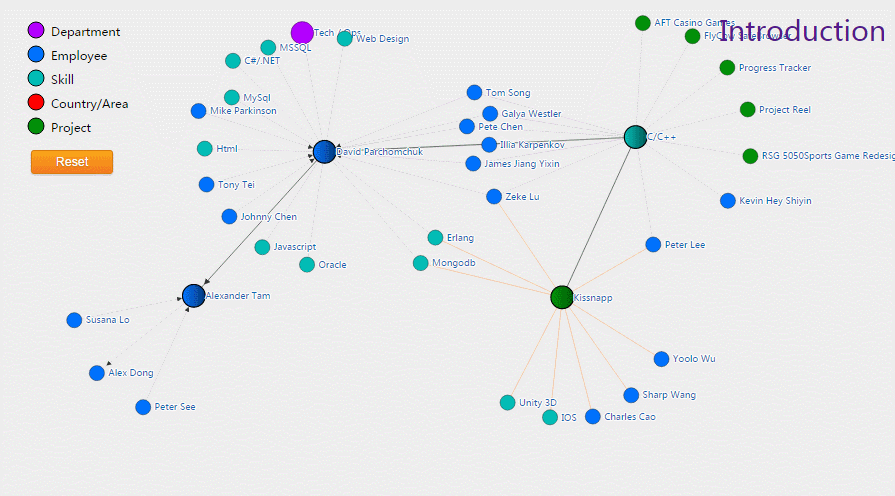
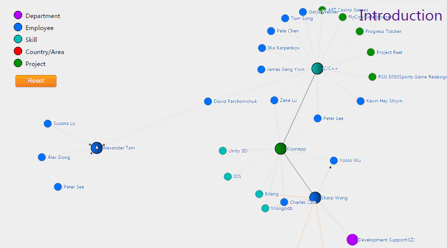
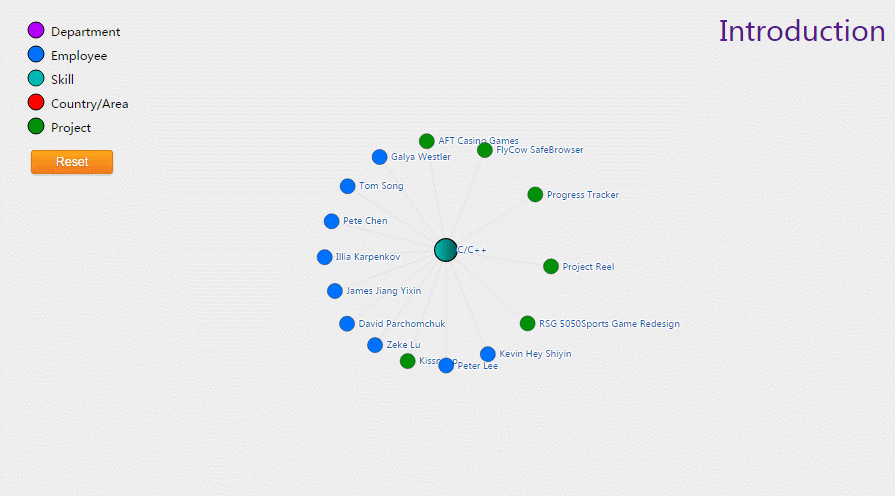
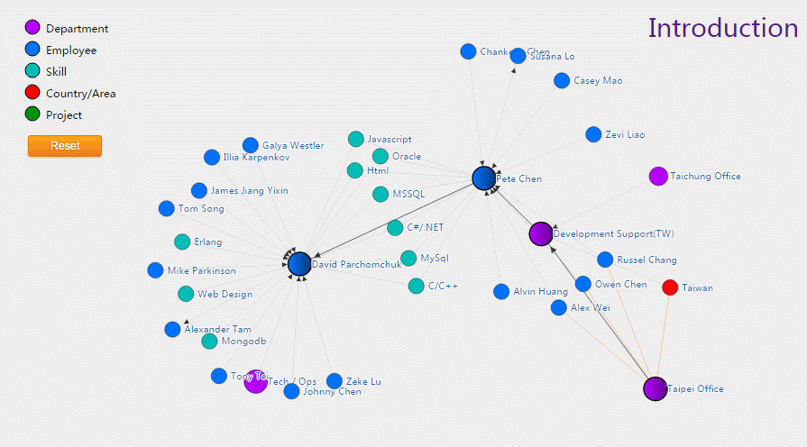

Data Visualization for the HR System
A simple introduction to the prototype
It starts with nodes
that have a relation to you
picture: a center node

Follow nodes and it may lead you to a wonderland
picture: somewhere (gif)

Canvas will move to make sure new nodes are visible
picture: move canvas

And you can move the nodes and canvas at will
picture: move canvas

Old nodes will disappear to free up space
picture: old nodes disappear

But you can pin your interested nodes to keep it on the canvas
picture: pin nodes

And you can focus on a node so that nothing will disturb you
picture: focus a node

You can zoom in to get clear view
picture: zoom in

When you get lost, reset is the SOS
picture: reset button

A word on touch screen
- It will support notebooks with touch
- It won't support smart phones due to:
- Limited screen size
- Poor performance
Next step
- Add more node types
- Allow users to select which kinds of nodes to show
- Add operation panel where users can take actions on nodes
That's all
We appreciate your feedback
Thank you